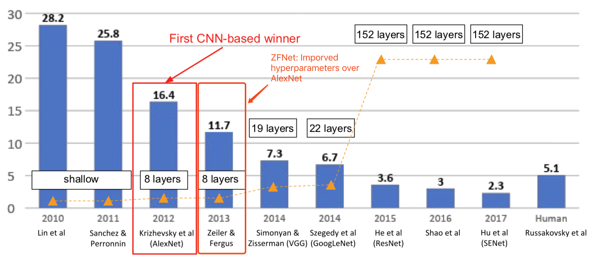
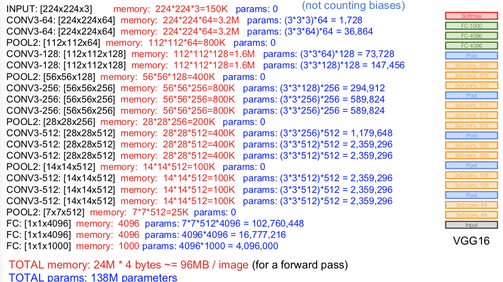

Lecture 9. CNN ArchitecturesReview: LeNet-5Case StudiesAlexNetZFNetVGGGoogLeNetResNetAn Analysis of Deep Neural Network Models for Practical Applications, 2017Other architectures to know...NiN (Network in Network)Improving ResNets... Identity Mappings in Deep Residual NetworksWide ResNetResNeXTStochastic Depth"Good Practices for Deep Feature Fusion"Squeeze-and-Excitation Network (SENet)Beyond ResNets... FractalNet: Ultra-Deep Neural Networks without ResidualsDenseNet: Densely Connected Convolutional NetworksEfficient networks...SqueezeNet: AlexNet-level Accuracy With 50x Fewer Parameters and <0.5Mb Model SizeMeta-learning: Learning to learn network architectures...NASNet (Neural Architecture Search with Reinforcement Learning)Learning Transferable Architectures for Scalable Image Recognition
CS231n 课程的官方地址：http://cs231n.stanford.edu/index.html
该笔记根据的视频课程版本是 Spring 2017(BiliBili)，PPt 资源版本是 Spring 2018.
另有该 Lecture 9. 扩展讲义资料：
Lecture 9. CNN Architectures
Review: LeNet-5
[LeCun et al., 1998]

Case Studies
AlexNet
[Krizhevsky et al. 2012]
第一个在 ImageNet 的分类比赛中获得成功的大型卷积神经网络。


ZFNet
[Zeiler and Fergus, 2013]
- ImageNet Large Scale Visual Recognition Challenge (ILSVRC) winners



VGG
[Simonyan and Zisserman, 2014]
- ImageNet Large Scale Visual Recognition Challenge (ILSVRC) winners


Q：Why use smaller fileters? (3x3 conv)
- Stack of three 3x3 conv (stride 1) layers has same effective receptive field as one 7x7 conv layer
- But deeper, more non-linearities
- And fewer parameters: vs. for C channels per layer
Q: What is the effective receptive field of three 3x3 conv (stride 1) layers?
- See this post: 关于感受野 (Receptive field) 你该知道的事

Details
- ILSVRC'14 2nd in classification, 1st in localization
- Similar training procedure as Krizhevsky 2012
- No Local Response Normalisation (LRN)
- Use VGG16 or VGG19 (VGG19 only slightly better, more memory)
- Use ensembles for best results
- FC7 features generalize well to other tasks
GoogLeNet
[Szegedy et al., 2014]
Deeper networks, computational efficiency

"Inception module"
design a good local network topology (network within a network) and then stack these modules on top of each other
Apply parallel filter operations on the input from previous layer:
- Multiple receptive field sizes for convolution (1x1, 3x3, 5x5)
- Pooling operation (3x3)
Concatenate all filter outputs together depth-wise

Q：What is the problem with this?

Solutions："bottlenect" layers that use 1x1 convolutions to reduce feature depth

最后，

ResNet
- ImageNet Large Scale Visual Recognition Challenge (ILSVRC) winners

[He et al., 2015]

What happens when we continue stacking deeper layers on a "plain" convolutional neural networks?
- The deeper model performs worse, but it’s not caused by overfitting!
Hypothesis: the problem is an optimization problem, deeper models are harder to optimize.
- The deeper model should be able to perform at least as well as the shallower model.
- A solution by construction is copying the learned layers from the shallower model and setting additional layers to identity mapping.
Solution：Use network layers to fit a residual mapping instead of directly trying to fit a desired underlying mapping.

最后，

也用瓶颈层：

最后给出实践表现：

An Analysis of Deep Neural Network Models for Practical Applications, 2017


Other architectures to know...
NiN (Network in Network)
[Lin et al. 2014]

Improving ResNets...
Identity Mappings in Deep Residual Networks
[He et al. 2016]

Wide ResNet
[Zagoruyko et al. 2016]

ResNeXT
[Xie et al. 2016]

Stochastic Depth
[Huang et al. 2016]

"Good Practices for Deep Feature Fusion"
[Shao et al. 2016]


Squeeze-and-Excitation Network (SENet)
[Hu et al. 2017]


Beyond ResNets...
FractalNet: Ultra-Deep Neural Networks without Residuals
[Larsson et al. 2017]

DenseNet: Densely Connected Convolutional Networks
[Huang et al. 2017]

Efficient networks...
SqueezeNet: AlexNet-level Accuracy With 50x Fewer Parameters and <0.5Mb Model Size
[landola et al. 2017]

Meta-learning: Learning to learn network architectures...
NASNet (Neural Architecture Search with Reinforcement Learning)
[Zoph et al. 2016]

Learning Transferable Architectures for Scalable Image Recognition
[Zoph et al. 2017]


This work is licensed under a Creative Commons Attribution-NonCommercial-ShareAlike 4.0 International License.